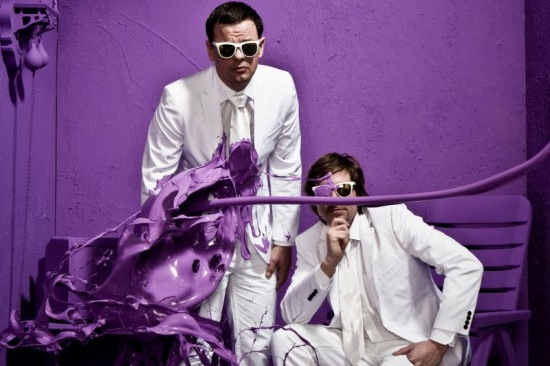
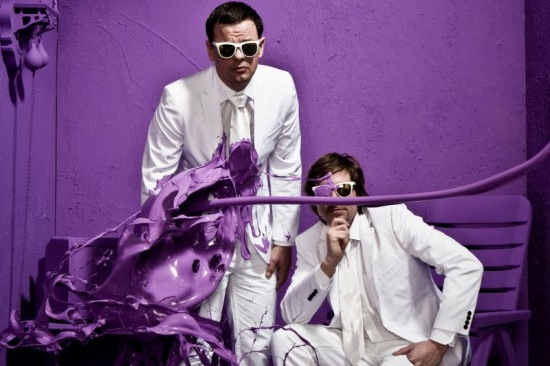

Studio RAAR
Photographer Ruud Baan and stylist Isis Vaandrager captured the founders of the Dutch design studio RAAR ("raar" is Dutch for strange). I imagine they had a blast shooting this.
Found on Fubiz

Photographer Ruud Baan and stylist Isis Vaandrager captured the founders of the Dutch design studio RAAR ("raar" is Dutch for strange). I imagine they had a blast shooting this.
Found on Fubiz